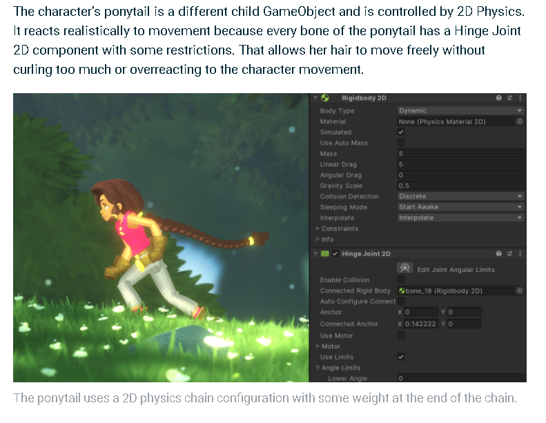

George Castle
Aniamting the Player
Project Blue 3/2/2020
Meeting Work
Making slides:

2.5 hours per week (disucssing agenda, planning content)
Editing video

0.5 hours per week (Watching through lecture recording, editing out moments)
Managing YouTube Channel

0.25 hours per week (Downloading lecture recording, uploading video, writing description)
Sending Announcements

0.25 hours per week
Player Pod Work
I was tasked with setting up the prefab for Io's view. This included making basic keyframes for most of the animations, and figuring out how to animate the scarf.
I also setup the various parameters and transitions for Io's animator, as an example for the other animator's who will be working on animating her.
Here is one of the first and simplest animations I made for Io falling, which is just a single keyframe for now, and is blended into from the jumping up keyframe depending on Io's vertical velocity.
Next up is Io's idle animation. This is a bit over exaggerated at the moment, as I mainly wanted it to move so much while testing out the scarf physics
Here is Io's jump animation. It's currently very short as the animations are not driving the motions, so I couldn't have too much anticipation
Here is Io's run animation. Of the animations I've completed thus far, the keyframes themselves are probably the closest to a final product, but it still needs extra polish, adding in the various principles of animation to bring it to a finalized state.
Here is Io's wall slide animation. For this animation, I made sure to flip the sprite horizontally in the animation, so that when you run into or fall into a wall, Io turns around to face away from it. This meant that I had to go back and add keyframes to all of the other animations so that her scale was getting rest.
Next up is the wall jump. Similar to the normal jump, it's rather abrupt due to animations not driving any motions, and is by far the roughest of these animations, but should still serve as an okay starting point for the other animators to work off of.
Here we have a snippet from Unity's blog post on the Lost Crypt, their latest 2D features demo. This part specifically is talking about how they used rigidbody constraints to make the player's hair physics driven, which is a system I intended to copy for Io's scarf.
That... didn't end well. Something about having the rigidbodies be children of the bones utterly destroyed the scarf once the player began to move, and the problem greatly worsened when they switched directions.
After many hours of trial and error trying to get the rigidbody driven scarf to work, I abandoned the approach and began looking for alternatives. I happened across this video tutorial, which explains how to use verlett integration to create 2D physics ropes using the line render, and followed along to create my own version. Basically, we give a starting point, and the script simulates the physics for a number of points in a rope separated a given length.
Once I knew how I was going to be setting up the scarf, one gameobject with the newly written verlett integration rope script and linerenderer for each portion of the scarf, I setup the prefab.
I setup the linerenderer on each portion of the scarf to have a width curve that matched the artist's intended shape for that section, and set the color of the linerenderer to match.
Pictured above are the different settings for each scarf piece which are setup to have the correct number of segments and distance between points so that they match their intended look.
Here is an gif of the final result. It's a bit too wavy / light for my taste, so my next steps will be to figure out how to add some more weight to the simulation.

And finally, here's how it all looks together.
General Studio Responsibilities:
Attending Leads meetings:
3 hours per week
Attending Studio Meetings:
2 hours per week